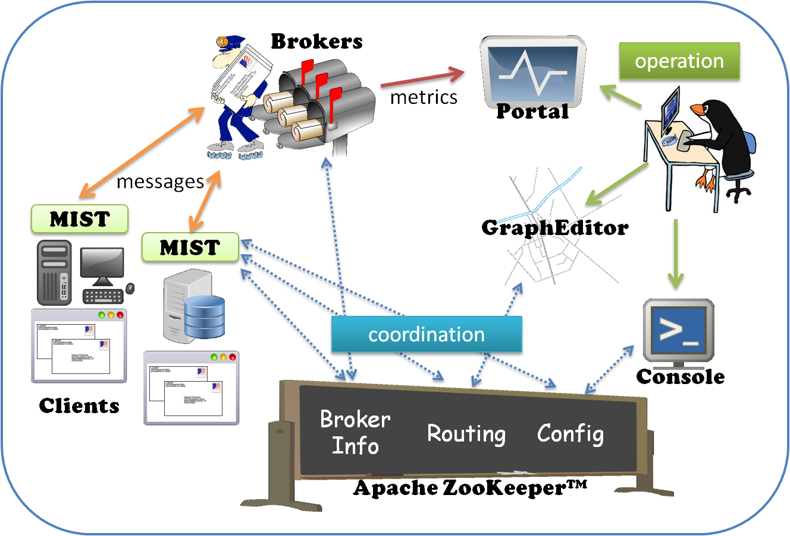

Trend Message Exchange is an in-house developed messaging system designed to provide high scalability,
improved stability, and efficient operability compared to expensive solutions from other vendors.
TME currently hosts thousands of message queues on clustered message brokers and handles more than 200 million messages daily.
By just adding more message brokers, TME can scale to much higher message limits as part of its architecture.
In addition, monitoring mechanism and administration tools are also built-in to enable TME as a powerful and scalable messaging framework at enterprise level.

Apache License, Version 2.0
Copyright 2012 Trend Micro
Licensed under the Apache License, Version 2.0 (the "License");
you may not use this file except in compliance with the License.
You may obtain a copy of the License at
http://www.apache.org/licenses/LICENSE-2.0
Unless required by applicable law or agreed to in writing, software
distributed under the License is distributed on an "AS IS" BASIS,
WITHOUT WARRANTIES OR CONDITIONS OF ANY KIND, either express or implied.
See the License for the specific language governing permissions and
limitations under the License.